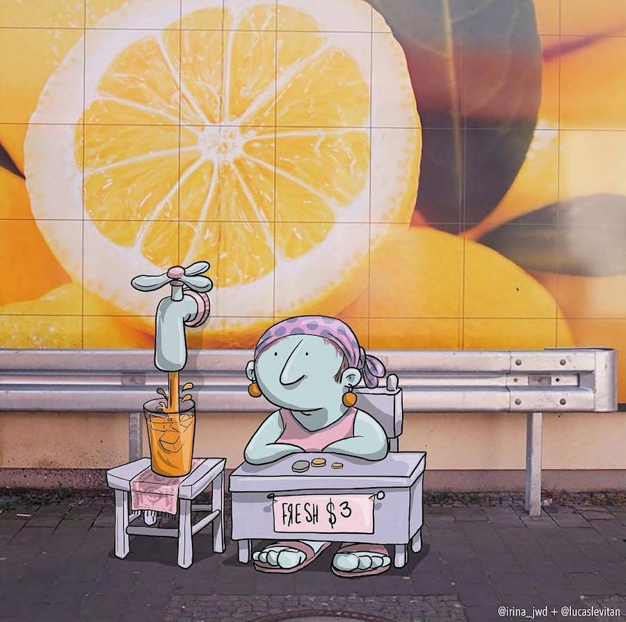

Những bức ảnh đầy thú vị bởi Lucas Levitan
trong cuộc sống đầy bộn bề đôi khi chúng ta lại bỏ qua những nét đẹp bình dị xung quanh. với góc nhìn đầy tinh tế và những nhận vật hoạt hình vô cùng cute Lucas Levitan đã thổi hồn vào những bức ảnh đầy sống dộng. chúc mọi người cuối thuần vui vẻ.


link: http://www.fubiz.net/en/2017/01/05/funny-photo-invasions-by-lucas-levitan/